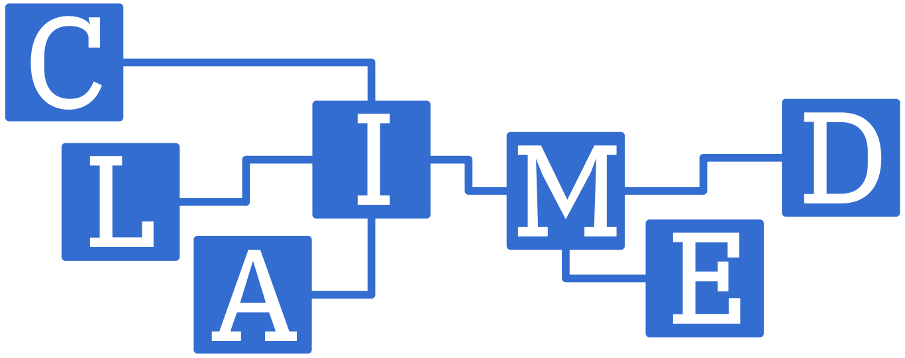

CLAIMED.
The Component Library for Artificial Intelligence, Machine Learning, ETL and Data Science
Requirements
- Open Source Visual Editor with no code / low code with jupyter notebooks using the R and python data science stack
- Seamless scaling during development and production on clusters and GPUs, on-premises and in cloud
- Reproducibility, Data Lineage and Collaboration support
Ready to Start?
Create your own presentation instantly.
120+ premium slides ready to use.